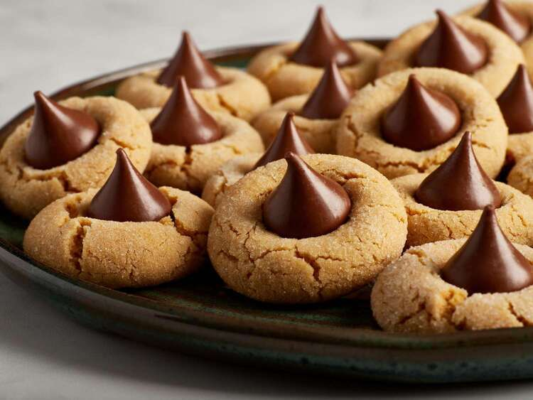

Peanut Blossoms

Description
Soft peanut butter cookie dough rolled in sugar,
cooked and topped in center with Hershey Kisses
milk chocolate.
Ingredients
- 1 cup shortening
- 1 cup peanut butter
- 1 cup packed brown sugar
- 1 cup white sugar
- 2 eggs
- ¼ cup milk
- 2 teaspoons vanilla extract
- 3 ½ cups all-purpose flour
- 2 teaspoons baking soda
- 1 teaspoon salt
- ½ cup white sugar for decoration
- 2 (9 ounce) bags milk chocolate candy kisses, unwrapped
Directions
- Preheat oven to 375 degrees F (190 degrees C). Grease cookie sheets.
- In a large bowl, cream together the shortening, peanut butter, brown sugar, and 1 cup white sugar until smooth.
- Beat in the eggs one at a time, and stir in the milk and vanilla.
- Combine the flour, baking soda, and salt; stir into the peanut butter mixture until well blended.
- Shape tablespoonfuls of dough into balls, and roll in remaining white sugar.
- Place cookies 2 inches apart on the prepared cookie sheets.
- Bake for 10 to 12 minutes in the preheated oven.
- Remove from oven, and immediately press a chocolate kiss into each cookie.
- Allow to cool completely; the kiss will harden as it cools.